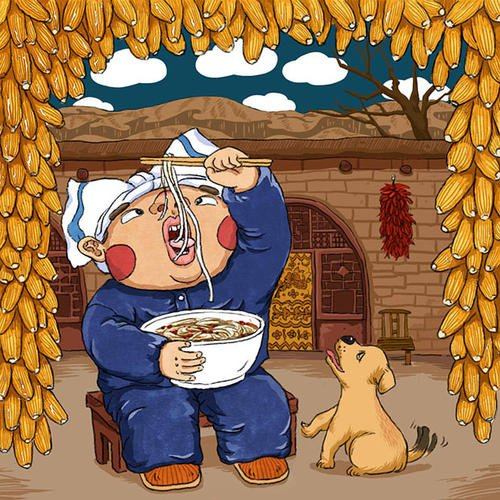

In some places, it’s custom to cook dumplings and noodles together. This is called gold silk and gold ingots. It’s yet another dish to express people’s wishes for prosperity. Though the origin of noodles is heavily disputed, there’s no doubt that noodles are a staple in Chinese cuisine.In the beginning, they were called “soup pancakes” (汤饼—tang miàn). People would tear the dough into little pieces and throw them into the pot. It wasn’t until the Tang Dynasty when people began rolling them into the noodle shape we know today.
Different side dishes in noodles also have different meanings
For Chinese New Year, people like to eat long noodles. They are also called 长寿面 (cháng shòu miàn), which means “longevity noodles.” You aren’t allowed to cut them and should try not to chew either. The longer the noodle, the longer your life will be. This calls for a lot of slurping. With noodles, there is great flexibility for sides and ingredients. Many vegetables and meats have symbolic meanings as well.
For example:
Eggs: big and healthy family
Lobster: endless money rolling in
Shrimp: fortune and wealth
Roasted pig: peace
Duck: loyalty
Peaches: longevity
Tofu: happiness and fortune for the entire family
Fish: surplus and wealth
Eggs: big and healthy family
Lobster: endless money rolling in
Shrimp: fortune and wealth
Roasted pig: peace
Duck: loyalty
Peaches: longevity
Tofu: happiness and fortune for the entire family
Fish: surplus and wealth